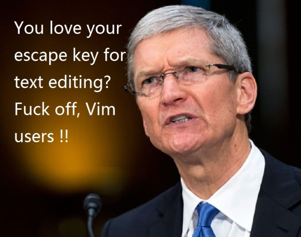
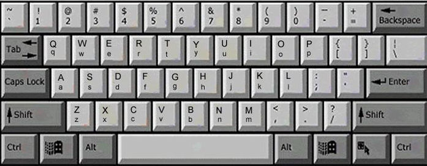
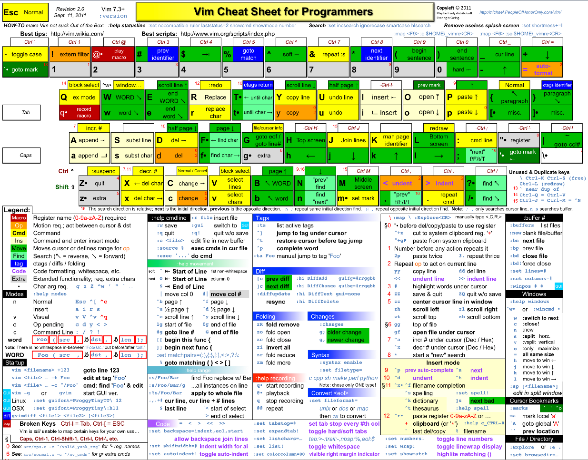
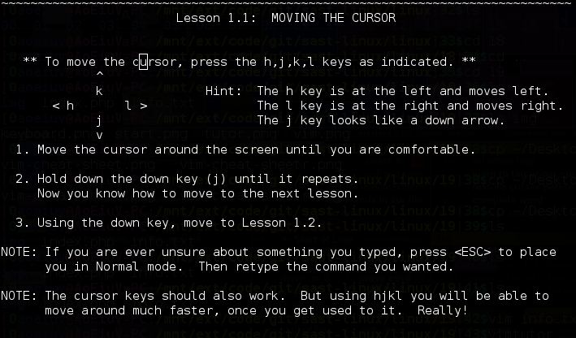
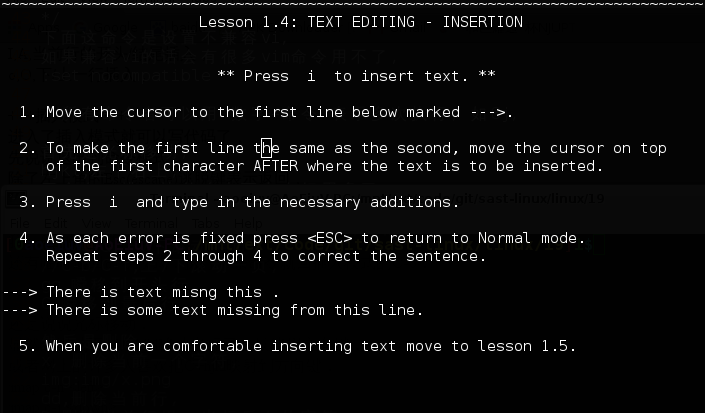
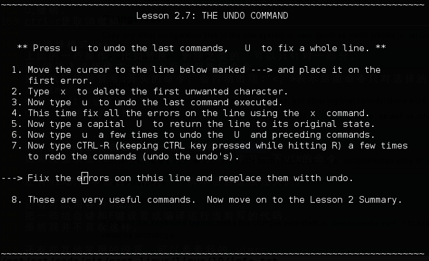
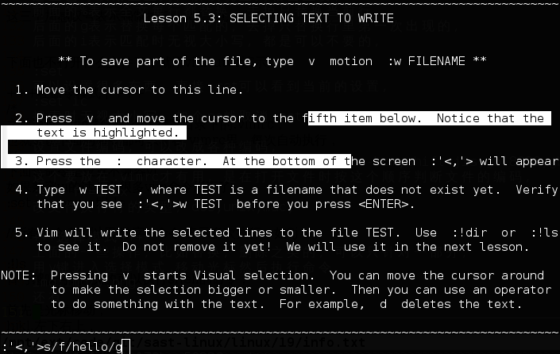
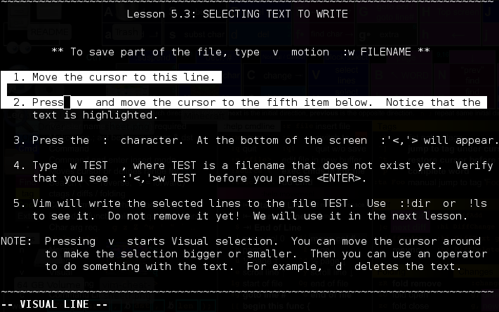

今天讲一讲vim
你们可能已经听过它的名字了，很多人可能会觉得用它编程很厉害，它现在的地位好像也是和sublime还有vscode相提并论的
但是vim能做的比它们多，因为命令行，你基本上只能用vim，nano功能太弱了。。
历史什么的就让你们自己百度了，你们肯定会看到emacs这个编辑器，其实这个我们之中没有人试过，据说比vim强大一点，你们有兴趣可以去试试，顺便还可以学学lisp这门优秀的语言

vimtutor
这是个命令，其实是vim的官方教程，
而且这个教程本身可以用vim的操作，
跟着教程走一遍就基本可以简单使用vim了，

其实还有中文的vimtutor,
vimtutor zh

------------------
首先，vim主要是在主键盘操作，
也就是尽量不用方向键和小键盘那些，

然后其实vim命令是很复杂的，

但不需要都掌握，
一些基本的用顺手了，
其他的能学多少是多少，
------------------
用vim打开文件,
vim 文件名
:q
退出，
:w
保存，
:e 文件名
打开另一个文件，
这三个加感叹号表示强制执行，:q!,:w!,
下面也不打开什么文件了，就用vimtutor演示,
+++在命令模式下+++
/*
之前说过，vim打开是会运行家目录下的.vimrc，
也就是说下面的命令都可以写在.vimrc里，每次自动执行，
*/
下面这命令是设置不兼容vi，
如果兼容vi的话会有很多vim命令用不了，
:set nocompatible
//所有命令者可以用 数字+命令 表示多次执行，如8j，
:!ls
冒号感叹号:!开头的可以执行shell的命令，
首先是光标移动，
hjkl,左下右上，
四个在一排，比什么上下左右好用多了，

w,b,光标跳到下/上个单词，还有个e也是跳到行尾，
$,^,光标跳到行尾/行首，还有个0也是跳到行首，
C-u/C-d,上/下滚动半页，
C-b/C-f,上/下滚动一页，
C-e/C-y,上/下滚动一行，
gg,瞬移到开头行，
G,瞬移到最后行，
数字G,瞬移到指定行，8G就是跳到第8行，
zz,瞬移到屏幕中间，
然后是删除，
x，删除当前一个字符，

dd,删除当前行，
D,删除当前行里，光标后面的字符，
然后是进入插入模式的命令,

iao,这三种，加上大小写共6种，都试试效果，
i,a,当前字符的前/后面插入，
I,A,当前行的开头/结尾插入，
o,O,下/上一行插入，
+++插入模式+++
进入了插入模式就可以写代码了，
先说说退出到命令模式，
除了左上角的Esc(escape)逃脱键表示返回，
还可以用C-[输入Esc的值也能返回，
还可以用C-c表示结束插入模式，
我一般都是用C-[,
还有临时退回命令模式，执行一条命令就返回插入模式的C-o，
然后是删除，默认的backspace(退格键)和其他编辑器完全不同，
vim的退格键只用来修改本次的插入，
我用不惯，所以用下面的命令改成和别的一样，
:set backspace=2
真正的删除键(Delete)，删除后面一个字符，正常使用，
------------------
有了上面这些基本就能当成普通的编辑器使用了，
而且是个不需要方向键不需要小键盘不需要鼠标的编辑器，
但vim显然不止这样，所以继续讲点命令，
帮助，
:h,后面跟上要查的命令，
但是并不好用，因为vim里面的命令太复杂，还分各种模式，
而且命令模式还有些是冒号:开头的，总之不容易查到自己要的，

顺便说说，冒号:开头有大多数命令都是有缩写的，h是help的缩写，
搜索，
/,?,向下/上搜索，后面跟上正则表达式，
n,N,搜索下/上一个，循环搜索，
*,#,在一个单词上搞这个表示向下/上搜索这个单词，
替换，
:%s/正则/替换/gi
就是把上面的“正则”替换成“替换”，
这里也可以用上正则，所以说正则相当重要，
前面的%表示全文每行都替换，去掉只替换当前行，
后面的g表示替换每个匹配的，去掉只替换行里第一次出现的，
后面的i表示匹配时无视大小写，都是可以不要的，
:set
可以设置很多东西，直接:set可以看到当前的设置，
:set ic
搜索时无视大小写，加个no就取消:set noic
:set fenc=utf-8
设置文件编码，可以改成各种编码，
:set fileencodings=ucs-bom,utf-8,cp936,ucs-bom,shift-jis,gb18030,gb2312,latin1
这个要放在.vimrc才有用，是在打开文件时按这个顺序判断文件的编码，
:set ff=unix
改文件换行符的类型，dos,unix,mac,
复制粘贴
y,这个y是复制，后面跟上光标移动的命令，
敲两下y是复制当前行，
要配合下面说的选择才能比较准确的选择要复制的内容，
p,P,粘贴，分别是在后面和前面粘贴，

u,撤销，
ctrl-r是取消撤销，

+++选择模式+++
上面的一些操作，比如替换，删除之类的，可以只针对一部分，
用v键进入选择模式,移动光标然后执行命令，
如果执行的是冒号:开头的命令，会自动出现:'<,'>表示后面命令只对选择的这部分，

还有shift-v是整行选择，

ctrl-v是矩形的选择，

这些选择都是结合别的命令使用的，可以随便试试，
---------------------
剩下的时间主要自己操作一番，看看vimtutor,
如果能喜欢上vim，就花个几天，几周来学习一下vim的命令，
还有vim的脚本语言，作为一个脚本语言是很强大的，
还有可以用各种map，
把一些组合键和F键设置成编译运行当前写的代码，
虽然我并不喜欢这样，